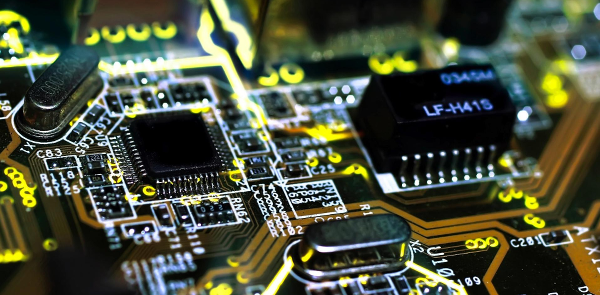
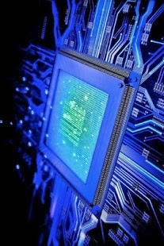

Компьютерная Инженерия и Управления |
|
Что это такое?Компьютерная инженерия (также называется инженерией компьютерных систем) — направление, которое объединяет информатику и компьютерные технологии. Компьютерные инженеры — это специалисты, которые имеют фундаментальную и профессиональную подготовку по трем составляющим – трем «китам», на которых базируются современные информационные технологии – программным, программируемым (аппаратным) и сетевым (коммуникационным). Это позволяет им свободно чувствовать себя в различных секторах ИТ-индустрии: в области разработки программных систем, многоядерных микропроцессорных систем и программируемых систем на кристаллах, беспроводных и мобильных систем, распределенных вычислений, сетевых коммуникаций. Дорога долгаяВ рамках компьютерной инженерии студенты получают глубокие знания и твердые практические навыки по следующим технологиям:
Это того стоитХотите стать успешным программистом, успешным ИТ-шником? Направление компьютерной инженерии дает для этого мощную базу, поскольку позволяет не только осваивать отдельные языки и технологии, а понимать их работу во взаимодействии, «на глубину», становиться настоящим «дирижером компьютерного оркестра». see more |
Menu |
| Все права принадлежат ДЖ К Роулинг (с) 2018 | |